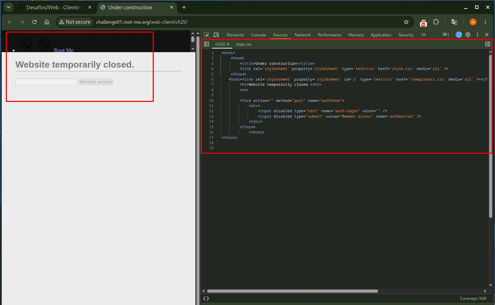
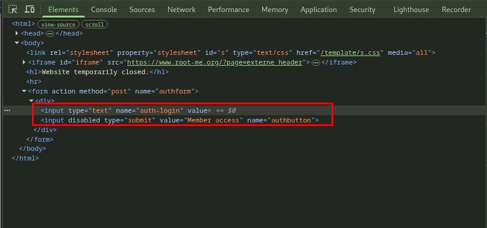
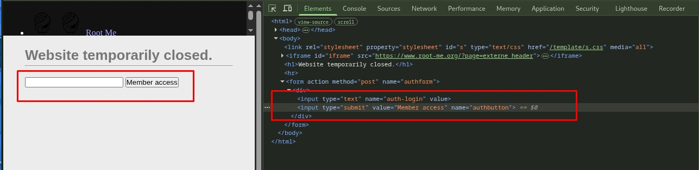
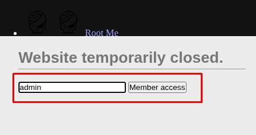
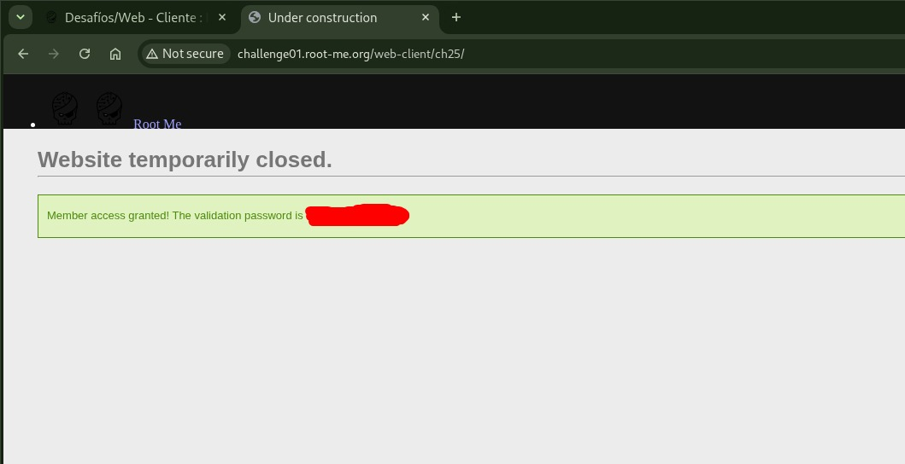

Objetivo
El reto de Root-Me muestra una página con el mensaje Website temporarily closed y un formulario de acceso para miembros. El campo de texto y el botón aparecen deshabilitados, así que no se puede escribir ni enviar nada. El objetivo es conseguir enviar el formulario a pesar de ello.
Solución
Paso 1: Inspeccionar el código de la página
Con las herramientas de desarrollador abiertas (F12), la pestaña Sources muestra el HTML de la página. El formulario tiene dos controles, el campo auth-login y el botón authbutton, y ambos llevan el atributo disabled.

Paso 2: Quitar el atributo disabled del campo de texto
En la pestaña Elements se puede editar el DOM en vivo. Se selecciona la línea del campo de texto y se elimina la palabra disabled. En la captura el campo ya no lo tiene, mientras que el botón todavía lo conserva.

Paso 3: Quitar el atributo disabled del botón
Se repite la edición en el botón authbutton. Con los dos atributos eliminados, el formulario queda activo en la página.
<!-- antes -->
<input disabled type="submit" value="Member access" name="authbutton">
<!-- después -->
<input type="submit" value="Member access" name="authbutton">
Paso 4: Rellenar el campo y enviar el formulario
Con el campo activo se escribe un valor, en este caso admin, y se pulsa Member access.

Paso 5: Resultado
La página responde con el mensaje Member access granted! y muestra la contraseña de validación del reto. Está tachada en la captura a propósito.

Lecciones aprendidas
- El atributo
disabledsolo controla lo que muestra el navegador. Quien usa la página puede editarlo desde las herramientas de desarrollador y no protege nada. - Todo control de acceso debe validarse en el servidor. Ocultar, deshabilitar o bloquear elementos en el cliente es solo una ayuda visual.
- Las herramientas de desarrollador (Elements y Sources) son lo primero que conviene mirar en los retos de la categoría web de cliente.